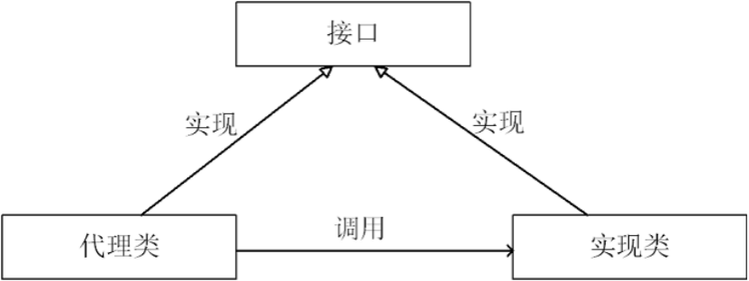

通过代理控制对象的访问,可以详细访问某个对象的方法，在这个方法调用处理，或调用后处理。既(AOP微实现) ,AOP核心技术面向切面编程。

SpringAOP、事物原理、日志打印、权限控制、远程调用、安全代理 可以隐蔽真实角色
由程序员创建或工具生成代理类的源码，再编译代理类。所谓静态也就是在程序运行前就已经存在代理类的字节码文件，代理类和委托类的关系在运行前就确定了。
public interface IUserDao {
void save();
}
public class UserDao implements IUserDao {
public void save() {
System.out.println("已经保存数据...");
}
}
代理类
public class UserDaoProxy implements IUserDao {
private IUserDao target;
public UserDaoProxy(IUserDao iuserDao) {
this.target = iuserDao;
}
public void save() {
System.out.println("开启事物...");
target.save();
System.out.println("关闭事物...");
}
}是根据类加载器和接口创建代理类（此代理类是接口的实现类，所以必须使用接口 面向接口生成代理，位于java.lang.reflect包下）
缺点：jdk动态代理，必须是面向接口，目标业务类必须实现接口
// 每次生成动态代理类对象时,实现了InvocationHandler接口的调用处理器对象
public class InvocationHandlerImpl implements InvocationHandler {
private Object target;// 这其实业务实现类对象，用来调用具体的业务方法
// 通过构造函数传入目标对象
public InvocationHandlerImpl(Object target) {
this.target = target;
}
public Object invoke(Object proxy, Method method, Object[] args) throws Throwable {
Object result = null;
System.out.println("调用开始处理");
result = method.invoke(target, args);
System.out.println("调用结束处理");
return result;
}
public static void main(String[] args) throws NoSuchMethodException, SecurityException, InstantiationException,
IllegalAccessException, IllegalArgumentException, InvocationTargetException {
// 被代理对象
IUserDao userDao = new UserDao();
InvocationHandlerImpl invocationHandlerImpl = new InvocationHandlerImpl(userDao);
ClassLoader loader = userDao.getClass().getClassLoader();
Class<?>[] interfaces = userDao.getClass().getInterfaces();
// 主要装载器、一组接口及调用处理动态代理实例
IUserDao newProxyInstance = (IUserDao) Proxy.newProxyInstance(loader, interfaces, invocationHandlerImpl);
newProxyInstance.save();
}
}原理：利用asm开源包，对代理对象类的class文件加载进来，通过修改其字节码生成子类来处理。
使用cglib[Code Generation Library]实现动态代理，并不要求委托类必须实现接口，底层采用asm字节码生成框架生成代理类的字节码
public class CglibProxy implements MethodInterceptor {
private Object targetObject;
// 这里的目标类型为Object，则可以接受任意一种参数作为被代理类，实现了动态代理
public Object getInstance(Object target) {
// 设置需要创建子类的类
this.targetObject = target;
Enhancer enhancer = new Enhancer();
enhancer.setSuperclass(target.getClass());
enhancer.setCallback(this);
return enhancer.create();
}
public Object intercept(Object obj, Method method, Object[] args, MethodProxy proxy) throws Throwable {
System.out.println("开启事物");
Object result = proxy.invoke(targetObject, args);
System.out.println("关闭事物");
// 返回代理对象
return result;
}
public static void main(String[] args) {
CglibProxy cglibProxy = new CglibProxy();
UserDao userDao = (UserDao) cglibProxy.getInstance(new UserDao());
userDao.save();
}
}Spring中。
JDK动态代理只能对实现了接口的类生成代理，而不能针对类 。
CGLIB是针对类实现代理，主要是对指定的类生成一个子类，覆盖其中的方法 。
因为是继承，所以该类或方法最好不要声明成final ，final可以阻止继承和多态。
个人博客 蜗牛